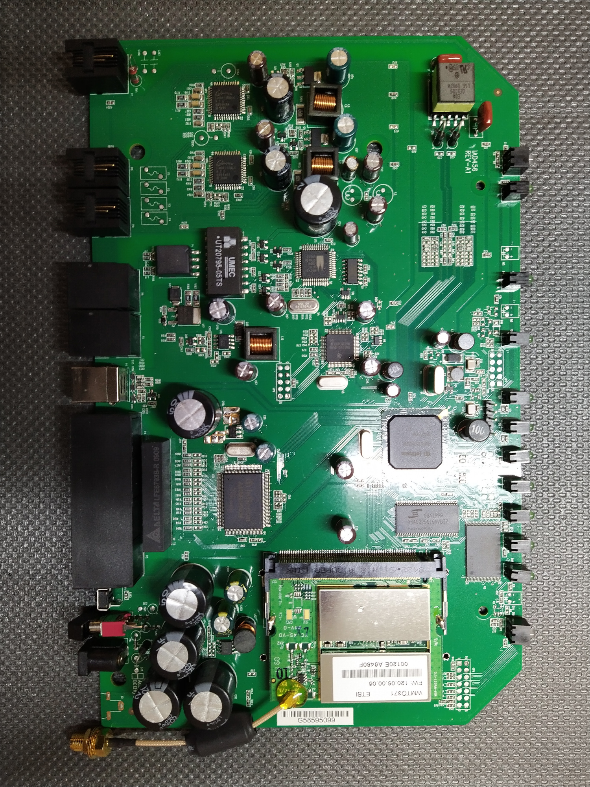
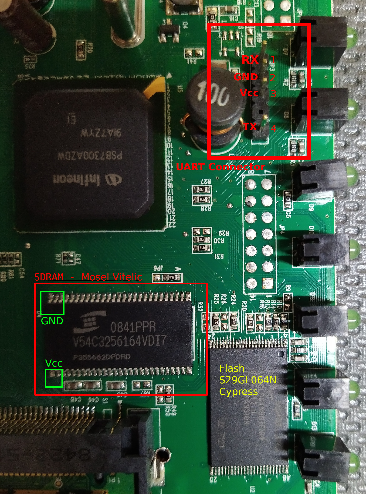
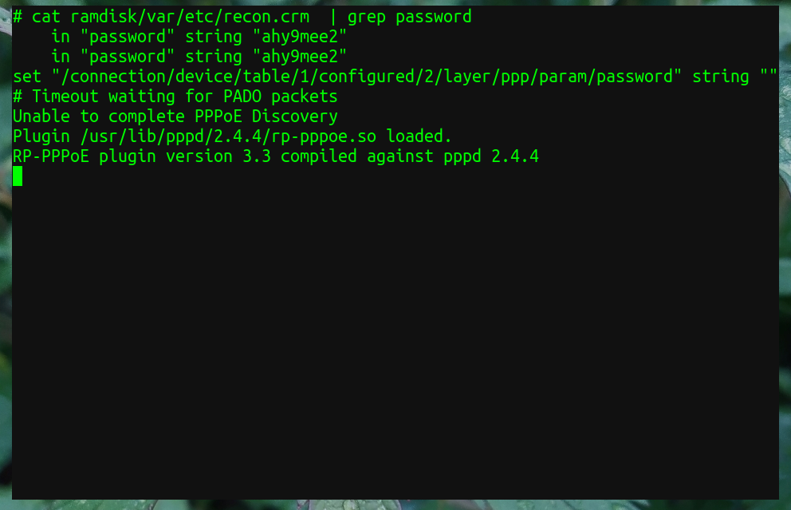
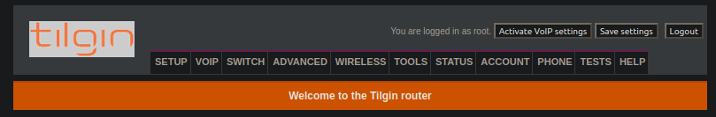

Exploring a Router
//=====================================================\\
I got my hand on an old Tilgin HG1311 router recently, so I
decided to have some fun with it. I doubt anyone is still using
a machine like this, but nevertheless, poking around can't hurt.
Once I took the case off, I had a closer look at the ICs installed on the PCB. Here's a picture: 
The first chip I obtained a datasheet for is the S29GL064N, which is a flash chip. This holds the firmware of the device. The V54C3256164 is a SDRAM. For both of these, datasheets were available. The big BGA chip is an Infineon PSB7300AZDW, which I couldn't obtain any detailed information for, nor a datasheet. I added a picture with the labeled chips below. 
Right away, I assumed that the pin header on the top left of the above image must be the UART connector. To find out what each pin does, I just went ahead and used the V54C3256164 for help. I checked the datasheet for the GND and Vcc pins and then used a multimeter to check which pin of the pin header is GND, I did the same for Vcc. Finding TX and RX (labeled from the perspective of the router PCB) was no problem via trial and error.
Next step was setting up my USB-to-UART connector and powering on the router. I used a CH340 connector, which I hooked up to the router pin header. I connected to the device via the application minicom from my laptop. After powering on the router, I was immediately able to see the boot sequence.

After some digging around on the device, I found a file containing some interesting strings, among them "username" and "password". Below you can see the result of grep-ing the file. One of the usernames that turned up was "root". 
Next, I connected to the device via LAN and to log in via:
The last image shows that I was able to log in to the router web GUI with these credentials :) 
That's it for now! Would be nice to get my hands on the firmware...
\\=====================================================//